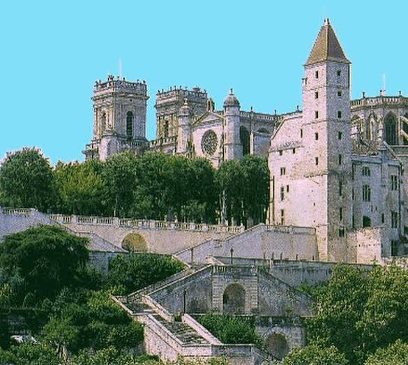

Cathédrale
Sainte-Marie d'AuchUNESCO · Chemins de Compostelle


⟹ Sites Emblématiques ⟸
Dominant la ville haute d'Auch, capitale historique de la Gascogne, la cathédrale Sainte-Marie compte parmi les dernières grandes cathédrales gothiques bâties en France. Son chantier s'étire sur près de deux siècles : commencé à la fin du XVe siècle à l'emplacement d'un édifice roman devenu trop étroit, il ne s'achève qu'en 1680, offrant un remarquable témoignage de la transition entre le gothique flamboyant finissant et l'affirmation des styles Renaissance puis classique.

C'est l'archevêque François de Clermont-Lodève, homme de goût formé en Italie, qui donne au début du XVIe siècle une impulsion décisive au chantier : il commande à Arnaud de Moles les célèbres verrières du chœur, l'autel de Sainte-Catherine et les stalles. La façade classique, encadrée de deux tours culminant à 44 mètres, ne sera achevée qu'au XVIIe siècle, et l'édifice est finalement consacré le 12 février 1548 par l'évêque Jean Dumas.
Étape sur les chemins de Saint-Jacques-de-Compostelle, la cathédrale se dresse sur un vaste terre-plein que l'on rejoint depuis les bords du Gers par l'escalier monumental, aménagé en 1863 et long de 374 marches, jalonné en son tiers par la statue de d'Artagnan, mousquetaire gascon né non loin d'Auch et immortalisé par Alexandre Dumas.
Le chœur de la cathédrale abrite un dialogue rare entre deux ensembles Renaissance conçus pour se répondre : les 113 stalles de chêne sculpté et les 18 verrières signées d'Arnaud de Moles reprennent le même vaste programme iconographique, celui de l'histoire du Salut, depuis la Genèse jusqu'au Jugement dernier.
Le 25 juin 1513, la dernière verrière est posée : une inscription en gascon en garde la trace, « en l'honneur de Dieu et de Notre-Dame ».
— Signature d'Arnaud de Moles, déambulatoire de la cathédraleMaître verrier toulousain formé à l'art italianisant, Arnaud de Moles introduit dans le vitrail gascon de grandes figures en perspective, sur le modèle de la peinture sur toile de son temps. Les stalles, terminées quelques années plus tard sous l'épiscopat de François de Tournon, reprennent en écho les personnages sculptés au sommet des dossiers.
Tour d'Armagnac ancienne prison épiscopale du XIVe siècle, à quelques mètres de la cathédrale, dans la vieille ville.
Pousterles et maisons à colombages ruelles étroites et pentues reliant la ville basse à la ville haute, typiques du vieil Auch.
Château de Castelmore à environ 30 km, ce château est le lieu de naissance présumé de Charles de Batz-Castelmore, modèle du d'Artagnan de Dumas.
Musée des Amériques à Auch même, il conserve les collections rapportées par les explorateurs et voyageurs gersois du Nouveau Monde.